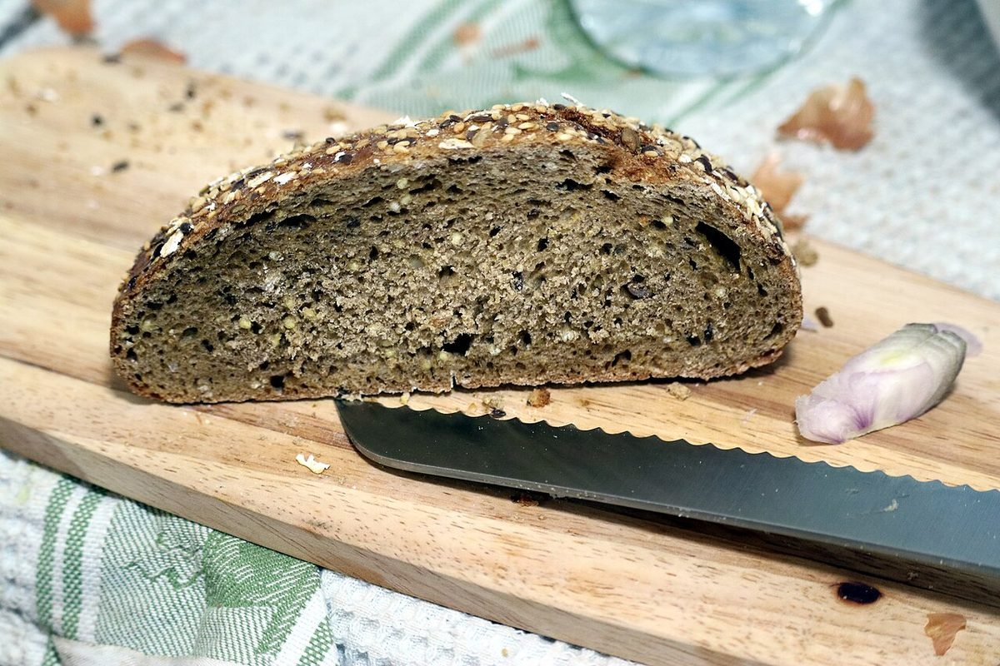

店のこと ×2
店のこと
お店について確認できているのは、所在地・電話番号・Instagramのアカウントだけです。
このページの写真と言葉は、制作側が想像して選んだものです。お店の実際の様子・考え・メニューとは関係がありません。
確認できていること
- 店名は「ベーカリーハウスアルジャーノン」、業種はベーカリー
- 所在地は福島県いわき市小名浜大原小滝町７−１３(〒971-8111)
- 電話番号は0246-38-9145
- 営業時間・定休日・メニュー・価格・ご予約・駐車場は準備中


これから確認すること
お店の紹介文、商品の写真、お店の方の言葉などは、お店からご提供いただいたものに差し替えます。確認が取れるまでは、憶測では書きません。